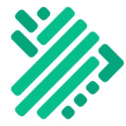
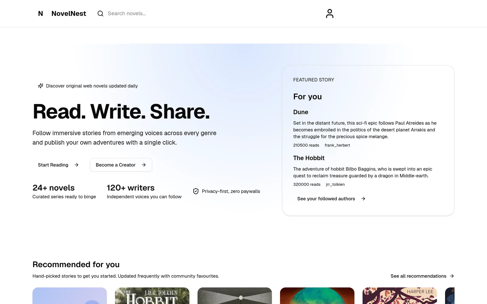
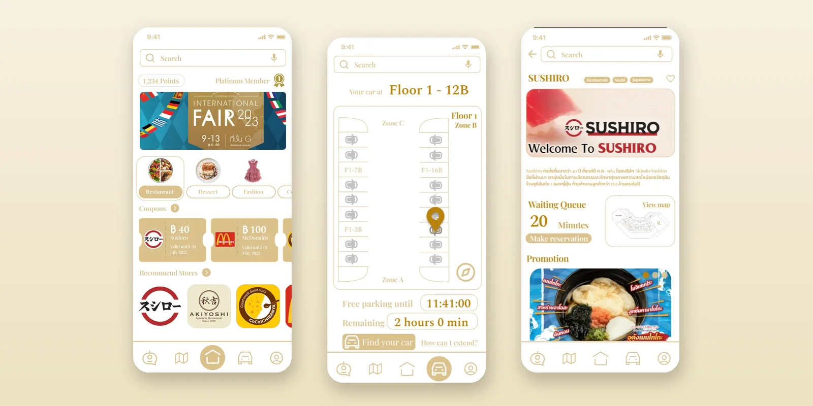

In preparation
MoCA: AI containment
Keeps an AI agent inside what its user allowed, even when a prompt injection works.
Final-year Computer Engineering, SIIT, Thammasat University
I'm Singha (August), a final-year Computer Engineering student at SIIT, Thammasat University. I believe good security should help a business move forward with confidence, not hold it back. So I build the technology, lead the people and never lose sight of the business.
I research access control for cloud and AI systems. U-HAP, a paper I co-authored and presented, won the Best Paper Award at IEEE JCSSE 2026. I'm the tech lead of TU Alert for Thammasat University, I interned in the Information Security team at Allianz Ayudhya, and I placed #1 in Thailand at the national Olympiad in Informatics (2022).
Open to: security internships from January 2027, in Thailand or abroad; full-time roles from May 2027

IEEE JCSSE 2026, Bangkok: Best Paper Award for U-HAP.
02Experience
Built for Thammasat University
Launching soon
Tech LeadLeads the team; owns the architecture, the security design and the code.
Campus had no channel to the office able to act on an incident. TU Alert began at a Thammasat University hackathon; the university adopted the idea and commissioned the team to build it.
Once launched, anyone on campus can report from the app they already use, the right office is alerted, and the university keeps a record of every incident, response time and follow-through.


Allianz Ayudhya, Bangkok
Information Security InternMentored by the CISO; learned how TPRM operates within ISO 27001, NIST and the company’s internal framework.
Every supplier relationship introduces risk, and third-party risk management (TPRM) exists to contain it, yet each review was largely manual.
Two AI agents that support the team rather than replace it: each does the routine first pass and a person verifies every output. Both are now in production use by the Information Security team and Business Owners.

TOI Tutor and ABIG Center, online
Founder, Curriculum Author and Lead Instructor
Students aiming for the national programming olympiads (TOI, POSN) need a clear path from the basics to contest problems.
After winning the national title, founded two online platforms that prepare students for the olympiads and wrote their courses.

Amity Solutions, Bangkok
R&D Intern, AI Research Team
Joined while large language models were still maturing, when every chatbot needed careful engineering to earn trust.
Explored the newest GPT and Claude models and tested recent LLM research end to end, from question to sourced answer.

Running student bodies and events, alongside the technical work.
PresidentSub Student Committee 32, SIIT2024 – present
Leads the committee that represents the SIIT student body and organises its academic and social calendar.
Lead organiserSIIT First Meet 20242024
Led the welcome event for about 450 first-year students, with about 200 student organisers.
Project manager and product ownerNovel NestTeam project
A platform for readers and writers; also wrote the full-stack code.
03Research
Eleven projects with Prof. Somchart Fugkeaw (SIIT), each starting from a genuine weakness in how organisations secure cloud systems and answering it with a rigorous design fast enough for business use.
Research supervisor: Prof. Somchart Fugkeaw, School of ICT, SIIT.
By topic
3 projects
4 projects
2 projects
2 projects
Topic 1 of 4
Zero trust means no request is trusted just because it comes from inside the network. Every request is checked. These three projects ask how to make that check clear, fast and trustworthy across Kubernetes clusters, including in a post-quantum world.
 U-HAPPublished, IEEE JCSSE 2026All Kubernetes access-rule types in one graph, prepared ahead of time so each request is a quick lookup. A deny always wins.
U-HAPPublished, IEEE JCSSE 2026All Kubernetes access-rule types in one graph, prepared ahead of time so each request is a quick lookup. A deny always wins. FEDACUnder review, IEEE TDSCCheck the caller carefully once, then check a short-lived pass cheaply on every call.
FEDACUnder review, IEEE TDSCCheck the caller carefully once, then check a short-lived pass cheaply on every call. PQ-SCVA-MCKSubmittedEach cluster checks for itself that an access decision used every allow and deny rule, with post-quantum signatures.
PQ-SCVA-MCKSubmittedEach cluster checks for itself that an access decision used every allow and deny rule, with post-quantum signatures.Second author
one policy language for Kubernetes, compiled for speed
Kubernetes authorises requests with RBAC, yet organisations also need ACLs, attribute-based rules and explicit denies. Defined separately, the four models fragment checks, settle conflicts implicitly and slow decisions down.
U-HAP expresses all four in one policy graph, compiled in advance into per-resource lookup tables behind a Kubernetes webhook.

First author
zero-trust access without the latency penalty
Federated sign-in proves identity, not permissions, so every request needs repeated checks, costly proofs or a blockchain call.
FEDAC decides once: it compiles the governance-checked decision into a reusable, service-scoped result, and a sidecar beside each service validates it locally, with no blockchain call.
First author
post-quantum trust across Kubernetes clusters
Across Kubernetes clusters, an enforcer trusts the controller’s answer: a compromised controller can drop a deny rule and still return a validly signed “allow”, with signatures a quantum computer could one day forge.
PQ-SCVA-MCK verifies first: the enforcer checks each decision against the full committed rule set, and later checks stay light.
Topic 2 of 4
Cloud logs are the record of what happened, yet the provider that keeps them could alter or withhold them, and the logs are sensitive. An auditor has to check them without seeing everything and without simply trusting the provider. These four projects use proofs and encryption so an answer can be verified while the data stays private.
 ZKAuditAccepted, KST 2027An auditor proves it may audit cloud logs without revealing its credential, and sees the authentic log.
ZKAuditAccepted, KST 2027An auditor proves it may audit cloud logs without revealing its credential, and sees the authentic log.First author
senior project: private audit of cloud logs
Auditing cloud logs poses a dilemma: the provider that holds them could alter, delete or withhold records, yet the logs are sensitive and even who may audit must stay private.
This work joins the two, privately and at scale, in three steps: ZKAudit, ZK-ALBA and PQZ-Audit.
Private audit of cloud logs
Audit permission must be current and scoped, and a reused proof must be rejected.
Zero-knowledge audit proofs bound to what each auditor may see, checked by load-aware verifiers.
Private audit of cloud logs
Auditors need more than "are the logs intact?", and the logs must stay encrypted.
Designed to let an auditor ask real questions of encrypted cloud logs and verify that the answer is correct and complete.
Private audit of cloud logs
An attack can cross several companies, but none of them wants to share raw security logs.
Follows an attack across companies' encrypted logs, opened only when several companies agree.
Topic 3 of 4
AI agents read documents, call tools and act for people, which gives attackers new ways in. Threat hunting is the search for attackers who are already inside. These two projects ask how to keep an agent within what its user allowed, and how organisations can hunt together without sharing raw data.
Keeps an AI agent inside what its user allowed, even when a prompt injection works.
Designed to share zero-day threat hunting across organisations through private fingerprints, not raw data.
Topic 4 of 4
Distributed systems spread work over many machines, sites or clouds. The hard part is to keep them running when something fails and to keep their data correct. These two projects look at self-healing scheduling for industrial fog networks and at scaling a cloud service without serving stale data.

Fog clusters for factory machines that share work like a swarm and recover by themselves, with no central controller.
Scales a data service across clouds and sends requests only to copies that prove they are up to date.
04Projects
Smaller builds from courses and school.

Readers browse and review serialised novels, and writers publish episodes (Next.js and MySQL).
Project manager and product owner; also wrote the sign-in, review, admin and episode routes.
Details
A handheld Arduino console with an OLED screen and a menu of Snake, Flappy Bird and Tetris.
Wrote the menu, input and rendering loop; integrated games adapted from open-source projects.
Details
An IoT feeder with remote feeding, schedules and a live camera, controlled from a web app.
Built the MQTT pipeline between the Raspberry Pi and the web app. Bronze Medal and Popular Vote, SCiUS Forum 2022.
Details
A UX/UI design project in Figma for a shopping-mall app: indoor navigation, a smart parking assistant and an AI chatbot.
Team design project; the gallery shows the final high-fidelity screens.
Details05Credentials
Certificates, awards and hands-on security practice. Certificate pictures open full size.
Best Paper Award, IEEE JCSSE 2026
24 to 27 Jun 2026

TOI18: 1st place and Gold Medal
1 to 4 Jun 2022

ISC2 Certified in Cybersecurity (CC)
Certified since 2025, cycle to Dec 2028

NCSA CTF Thailand Tournament 2026
15 Aug 2026

24 to 27 Jun 2026
 2022
National Champion: 1st place in Thailand and Gold Medal
Thailand Olympiad in Informatics (TOI18)
Thailand's national programming olympiad, where the strongest student programmers from olympiad camps across the country compete. Placed 1st with the highest total score, after more than 1,000 hours of training in algorithms, data structures and problem solving.
2022
National Champion: 1st place in Thailand and Gold Medal
Thailand Olympiad in Informatics (TOI18)
Thailand's national programming olympiad, where the strongest student programmers from olympiad camps across the country compete. Placed 1st with the highest total score, after more than 1,000 hours of training in algorithms, data structures and problem solving.
06Education
My degree, and the tools and languages I use.
Aug 2023 to May 2027 (expected)
Specialisation in Cloud Computing and Cybersecurity
Sirindhorn International Institute of Technology (SIIT), Thammasat University
07Writing
Short technical notes on things I built and learned.
07Focus
Security is the core. These are the areas I apply it to, the work behind each, and what I want to do next.
Deciding who may call which service, checked on every request.
Work: FEDACU-HAPPQ-SCVA-MCK
Proving that an access or an audit was allowed, and judging whether a supplier can be trusted with data.
Work: ZKAuditZK-ALBAThird-party risk at Allianz AyudhyaISC2 CC
Keeping AI agents inside what a human allowed, even under prompt injection, and putting agents to work for security teams.
Authorisation that stays safe against future quantum computers.
Work: PQ-SCVA-MCK
Detecting attacks, including on encrypted logs shared between companies.
Work: Encrypted SIEMSOC labs in Splunk and WazuhNCSA CTF 2026
References
People I have worked with, who agreed to be named here.
Chief Information Security Officer (CISO)
Allianz Ayudhya
Internship mentor
Mentored me during my information security internship (Jun to Jul 2026), where I built and presented two AI agents for third-party risk.
Professor, School of ICT
SIIT, Thammasat University
Research supervisor
Supervises my research and co-authors my papers, including FEDAC (under review, IEEE TDSC) and ZKAudit (accepted, KST 2027).
Co-developer, TU Alert
SIIT, Thammasat University
Project partner
My teammate on TU Alert, which we are building together for Thammasat University.
08Contact
Looking for an internship from January 2027 and full-time roles from May 2027: security engineering, cloud security or AI security.